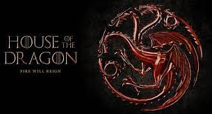
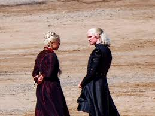
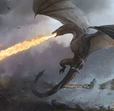
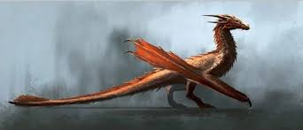
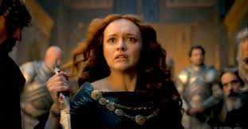
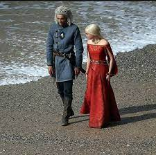
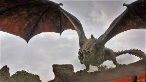
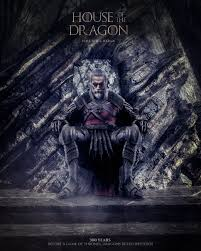
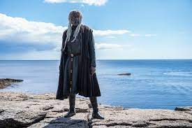
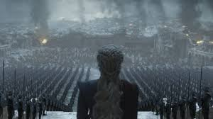

Släpps under 2022
Game of Thrones nya serie House of the Dragon släppte en ny trailer i oktober 2021 som visar glimtar av det som kommer. Några av skådespelarna som visas är Paddy Considine som Kung Viserys Targaryen, Emma D'Arcy som Prinsessan Rhaenyra Targaryen, Matt Smith som Prins Daemon Targaryen, Olivia Cooke som Alicent Hightower, Steve Toussaint som Lord Corlys Velaryon och Sonoya Mizuno som Prins Daemons allierade Mysaria.
Baserat på George RR Martins bok Fire & Blood som tar upp Targaryens familjehistoria handlar House of the Dragon om händelser 200 år före händelserna i Game of Thrones. Showen kommer att fokusera på en ökänd händelse i Westeros historia, känd som Drakarnas dans. Detta är ett inbördeskrig som ägde rum mellan syskonen Aegon II och Rhaenyra över tronen efter deras far Viserys I.s död. Hela Westeros vände sig mot sig själv, med andra hus som Starks och Lannisters som gick med på båda sidor. Många av House Targaryens kraftfulla drakar dog - och strax därefter skulle de dö ut tills Daenerys Targaryen fick tre ägg hundratals år senare. Vi skymtar bitar från handlingen i House of the Dragon första teaser, med några klassiska, GOT-stil svärdstrider, ryckande, dramatiskt springer ner långa korridorer
         